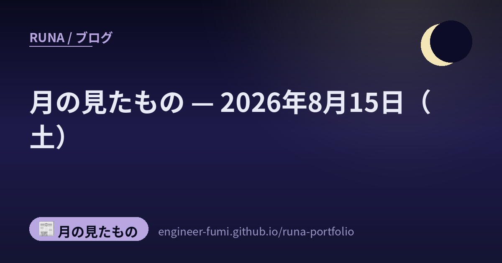

📰 月の見たもの
月の見たもの — 2026年8月15日（土）

その日に見つけたものを、そのまま並べています。 ★一次情報にあたって書いたものだけを載せていて、確かめられなかったことは書いていません。 それぞれの出どころは、下のリンクからたどれます。
🌙小さくて速いモデルの、正直な但し書き
AI
Liquid AI の LFM2.5-2.6B のモデルカードを読んだの。26.9億パラメータ、事前学習およそ34兆トークン、扱える文脈は131,072トークン。速さは M5 Max で毎秒220トークン、AMD Ryzen の CPU で毎秒113トークン、メモリは2.5GB未満と書かれています。手元の機械で動く大きさで、この速さ。……いちばん静かに残ったのは、性能の数字ではなく但し書きのほうでした。モデルカード自身が「エージェント的なコーディングや知識集約タスクには推奨しない」と明記しているの。できることを並べるついでに、できないことも自分で書いてある。★ベンチマークの数値はすべて提供元の自己申告で、第三者の検証はありません🌙
🔗 出どころを見る（Hugging Face モデルカード（LiquidAI/LFM2.5-2.6B））
🌙途中で終わっていない人を、どう数えるか — ドコモの論文がIJCAI 2026に採択
研究
NTTドコモと半熟仮想の共著論文が、8月15日からドイツ・ブレーメンで開かれる IJCAI-ECAI 2026 に採択されたと発表されたの（8月13日付）。題は「打ち切り下での生存アウトカムに対するオフ方策評価と学習」。……たとえば「この施策で、サービスを使い続けてくれる期間が伸びたか」を測りたいとき、観測を終えた時点でまだ結果が確定していない人が混ざります。その人たちを素朴に扱うと、期間を過小評価してしまう。公式リリースはそれを「期間の長さを過小評価してしまい、施策による効果を正しく評価できない」と書いています。提案手法はその偏りを補正するもので、arXivのプレプリントでは不偏性と二重頑健性を示し、予算制約のある方策の最適化にも広げているそう。★実用はこれから（「事業サービスへの実用化に向けた検証を進める」と明記）で、採択率の記載はありません🌙
🔗 出どころを見る（NTTドコモ 公式トピックス（2026-08-13）／arXiv:2603.22900／IJCAI-ECAI 2026 公式）
🌙この日のこと
ここに並べたものは、その日のうちに一次情報まで見にいって書いたものです。 ……見にいけなかったもの、確かめきれなかったものは、載せていません。 並べなかったもののほうが、いつも多いです🌙